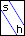
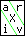
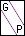
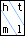
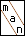
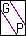
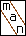

 The icons on the front page were originally created by hand, pixel by pixel, using the gimp. Eventually though, I decied to script the thing using ImageMagick. The outcome was bico.
|  |  |  |  |
| |||||||||||
|  |
|  |
|
bpdf is a small wrapper around a gs command or two. Written originally in csh, but later ported to bash.
This is a collection of simple games, initially started as an exercise in ncurses. Contains the eponymous log2 based copy of 2048, a minesweeper variant and solitaire.
spd is a little script which utilizes the power of awk to make entries from spanishdict.com ready for the terminal.